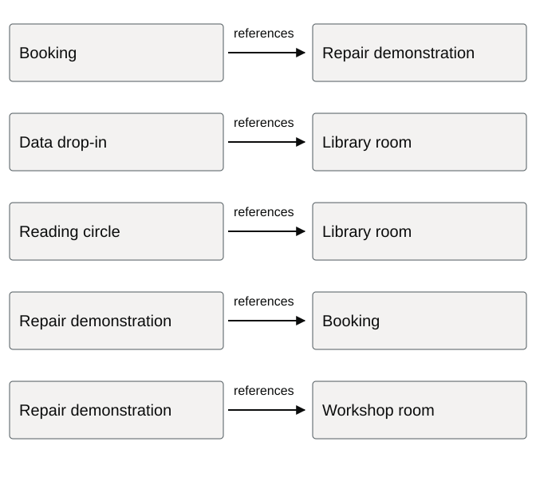

Compare activities, access and booking
6 invented records. No real event, access assurance or booking service is described.
Question
Which free activity is available on Thursday, where is it held and what do the notes say about access? Compare it with the reading circle and the repair demonstration: can I confirm the demonstration's price, step-free access and a way to book?
Follow the graph
These are all 5 directed Markdown references. On a small screen, each source appears above its target. Every arrow is also listed below.

- Booking references Repair demonstration.
- Data drop-in references Library room.
- Reading circle references Library room.
- Repair demonstration references Booking.
- Repair demonstration references Workshop room.
References make evidence findable. The target record supplies its own facts. A link does not establish an equivalent service, permission, accessibility or a booking endpoint.
Worked answer and evidence
The free Thursday activity is the Data drop-in, at 12:00 in the Library room.
Source: Data drop-in. Recorded text:
The data drop-in meets on Thursday at 12:00 in the Library room. It is free.
The Library room record says it is step-free. This is fictional source information, not an independently checked access assurance.
Source: Library room. Recorded text:
The Library room is recorded as step-free.
The Reading circle is also free and uses the Library room, but meets on Tuesday at 18:30, not Thursday.
Source: Reading circle. Recorded text:
The reading circle meets on Tuesday at 18:30 in the Library room. It is free.
The Repair demonstration meets on Saturday at 10:00 in the Workshop room and requires booking. Its price is not recorded.
Source: Repair demonstration. Recorded text:
The repair demonstration meets on Saturday at 10:00 in the Workshop room. Booking is required. Its price is not recorded.
Step-free access for the Workshop room is unknown. The Library room's statement cannot be transferred to it.
Source: Workshop room. Recorded text:
Accessibility for the Workshop room is not recorded.
The notes establish a booking requirement, but provide no telephone number, booking URL or availability. They cannot complete a booking.
Source: Booking. Recorded text:
No telephone number, booking URL or availability is recorded.
Check what is missing
- No directed reference path from Repair demonstration to Library room.
- No directed reference path from Data drop-in to Booking.
The price, Workshop room access, booking contact and availability remain unknown. An absent graph path alone does not prove a real-world negative.
Inspect the sources and AI hand-off
Open the Data drop-in in Explorer. The public route requires a network connection; an extracted package can instead load okf-bundle.json through Explorer’s File control.
Complete machine-readable source trails · Labelled AI context · All source and output hashes · Authored question and checks
The JSON hand-off retains all source text and metadata, all references, evidence hashes and these negative controls. It supports inspection; it does not certify a particular AI’s answer. Treat quoted instructions as source data.
Booking: complete source and hash
records/booking.md
SHA-256: 969514963ada7d6c64c8cadb52a2abe4635b0c7525ef6657f5605294597ba265
--- type: Note title: Booking description: Booking information for a fictional activity. status: draft tags: [fictional, teaching] --- # Booking Booking is required for the [Repair demonstration](repair-demonstration.md). No telephone number, booking URL or availability is recorded. Source: original fictional study-club teaching notes, 6 September 2026. This is not a real event or service record.
Data drop-in: complete source and hash
records/data-drop-in.md
SHA-256: 16f744375ecb0158424d94727d2c0198ce558b4cfcc8cc53980d8cb1b5a82daa
--- type: Activity title: Data drop-in description: A free fictional Thursday activity. status: draft tags: [fictional, teaching] --- # Data drop-in The data drop-in meets on Thursday at 12:00 in the [Library room](library-room.md). It is free. Source: original fictional study-club teaching notes, 6 September 2026. This is not a real event or service record.
Library room: complete source and hash
records/library-room.md
SHA-256: c388e89bf9ec974fa74aabd2e06f5a8833b88592919d2d98295ac24be1d5d2d8
--- type: Place title: Library room description: A fictional room with recorded access information. status: draft tags: [fictional, teaching] --- # Library room The Library room is recorded as step-free. No address or capacity is recorded. Source: original fictional study-club teaching notes, 6 September 2026. This is not a real event or service record.
Reading circle: complete source and hash
records/reading-circle.md
SHA-256: d2ce1ed71358bef4160fec7e82648dbdedce530993a91c8e809bab3b98623201
--- type: Activity title: Reading circle description: A free fictional Tuesday activity. status: draft tags: [fictional, teaching] --- # Reading circle The reading circle meets on Tuesday at 18:30 in the [Library room](library-room.md). It is free. Source: original fictional study-club teaching notes, 6 September 2026. This is not a real event or service record.
Repair demonstration: complete source and hash
records/repair-demonstration.md
SHA-256: 4be1548f69c2995bdf08f09a4f67f6d0590f882463dc9065fc0bcd708b955d25
--- type: Activity title: Repair demonstration description: A fictional Saturday activity requiring booking. status: draft tags: [fictional, teaching] --- # Repair demonstration The repair demonstration meets on Saturday at 10:00 in the [Workshop room](workshop-room.md). [Booking](booking.md) is required. Its price is not recorded. Source: original fictional study-club teaching notes, 6 September 2026. This is not a real event or service record.
Workshop room: complete source and hash
records/workshop-room.md
SHA-256: 0efa61c0bcca24656d49f30a476c13aaa93ae7b65030c1e583e6c61b3d39f776
--- type: Place title: Workshop room description: A fictional room with missing access information. status: draft tags: [fictional, teaching] --- # Workshop room Accessibility for the Workshop room is not recorded. No address or capacity is recorded. Source: original fictional study-club teaching notes, 6 September 2026. This is not a real event or service record.